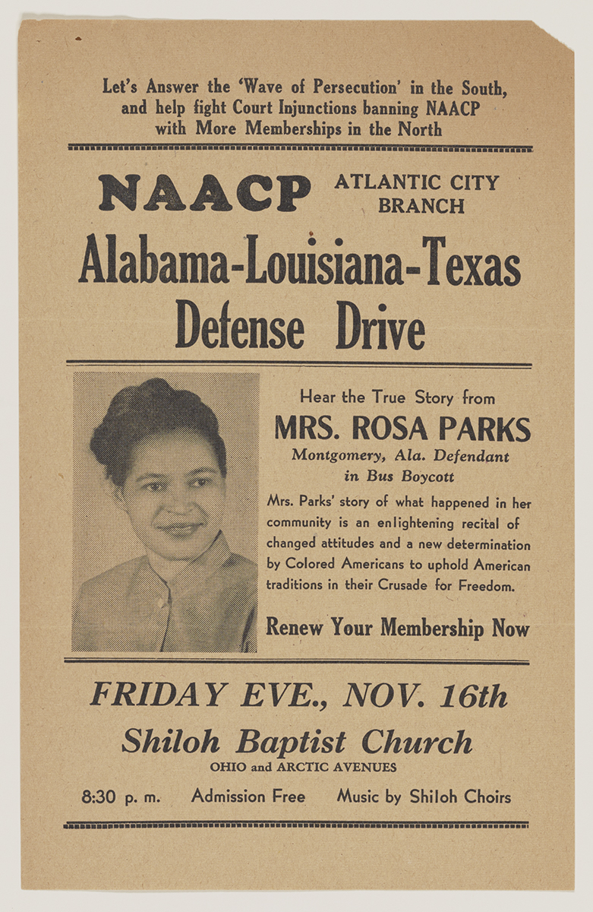

1913: Rosa Parks’ birth:
Rosa Parks was born on 2/4/1913, in Tuskegee, Alabama. Her parents are James and Leona McCauley.

.png)
Rosa Parks was born on 2/4/1913, in Tuskegee, Alabama. Her parents are James and Leona McCauley.
Rosa Parks entered Pine level segregated school before going later to Miss White’s Montgomery Industrial School. For high school, she went to Alabama State Teachers College. She dropped out in 1929 for family matters but then returned and finished high school in 1933.


Rosa Parks met Raymond Parks in the spring of 1931, and Raymond proposed to her on their second date. Raymond was a barber and he died of throat cancer in 1977. Raymond was also a part of the NAACP, or the National Association for the Advancement of Colored People. They married in December of 1932.
Rosa Parks joined the NAACP to stop racial injustice. This was well before the bus incident, and this shows that she was a black rights activist since the beginning. She explored many cases of black people harassment, and was a secretary in the NAACP.
This is the famous incident that everyone knows about, and is one of the things that drove Martin Luther King Jr. to deliver his famous “I have a dream” speech. Rosa Parks refused to give up her seat to a white person, so she was arrested.

Because Rosa Parks was arrested, this sparked a boycott for black equality and has succeeded in starting the movement towards black equality. Rosa Parks herself worked without end in these boycotts.

Rosa Parks, along with Martin Luther King Jr., went on to march on Washington, where Martin Luther King Jr. delivered his famous “I have a dream” speech. Unlike Martin Luther King Jr., However, Rosa Parks didn’t speak out but she was still recognised as a tribute.
Rosa Parks died of old age at 92 years old. She died at her home in Detroit on 10/25/2005.
Rosa Parks was tired of listening to the unfair laws made by the government. She wanted fairness and equality for all.
You have to trust yourself and your heart. You have to believe that what you are doing is for the better good.
| Words to describe her. | Why I chose this word. |
|---|---|
Civil Rights Activist |
She fought for the civil rights of black people and ended up succeeding. |
| Inspirational | Her quotes are really inspirational, such as the one that says “You must never be fearful about what you are doing when it is right.” |
| Hero | She helped shape the rights of black people today. She helped change the fact that black people were treated badly. |
| Winner | She won many medals for her bravery. She won medals such as the Presidential Medal of Freedom, the Congressional Gold Medal, and the NAACP Spingarn Medal. |
| Brave | She defied the police and fought for the rights of black people. She refused to give up her seat just because of her race. This shows that Rosa Parks is a brave person, and she even has the medals to prove it. |